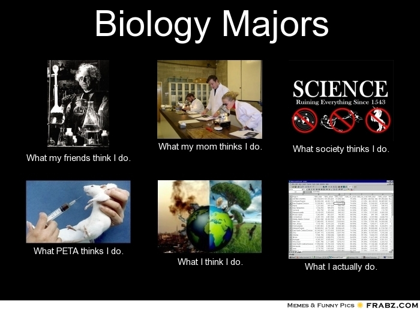
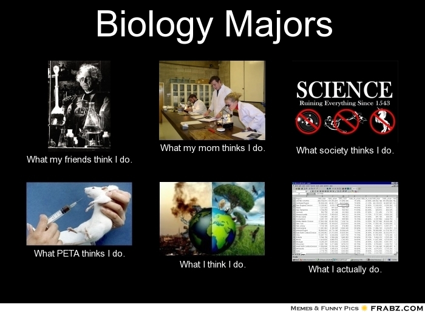
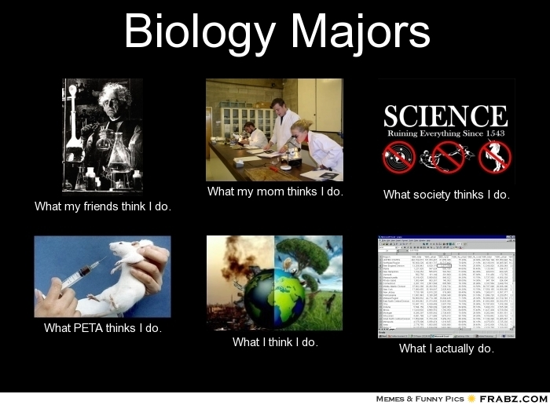

Ethan Glickman
I am a biology major at the University of California, Riverside. I am a second year undergraduate student who is on route for a BS Degree within the next 4 years. I attended Woodrow Wilson High School in Long Beach California.
During that time, I volunteered at the Long Beach Veteran’s Hospital for approximately 2 years where I assisted veterans and elderly citizens by taking them to get supplies, giving them wheelchair rides, or delivering bags for the hospital. I also have experience volunteering at a park: cleaning and organizing. I completed volunteer hours by helping during book distribution at my high school when Senior year began. I have over 100 hours at the hospital, only one hour per day was permitted which is why it was difficult to stack it up. My only job experience was temporarily working as a package handler for UPS when the COVID 19 Pandemic began. I only worked for a week, then I had to leave the job because UPS did not give me the work schedule I had signed up for which was very conflicting with my school schedule. I have since not had any job inquiries. My grade point average in high school was a 4.3 and my SAT was 1260. I took seven Advanced Placement classes in which I passed three of the exams. I got a 4 in AP Spanish Language, a 4 in AP Psychology, and a 3 in AP Literature. B,C. My only other professional experience is using the stock market a couple of years ago just for the experience and I had very little success and quickly lost interest. I have experience dissecting a cat and sheep eye from my high school Anatomy and Physiology class.
My other experience is tutoring kids in math for free which I do once in a while for family friends at no cost. I also have experience with coding at a minimal level, and am currently taking a computer science course at my school called CS008 where I will learn more of the basics before taking the next level up of computer science. I plan on possibly entering a nursing program later on or maybe switching my major to computer science depending on how my next couple of quarters go. My eventual goal is either to become a medical assistant or nurse anesthesiologist once completing my four years at UCR. My areas of proficiency are in mathematics and general chemistry, which will serve me well in the future for any STEM career paths I may choose to follow. I am interested in furthering my education, and learning more about coding in order to perfect my skill and increase the amount of options available for the near future. I am interested in graduate programs mainly, since I was to pursue a profession at the highest degree.
Experience
Education
UC Riverside
University of California Riverside
University of California Riverside
Portfolio
 

